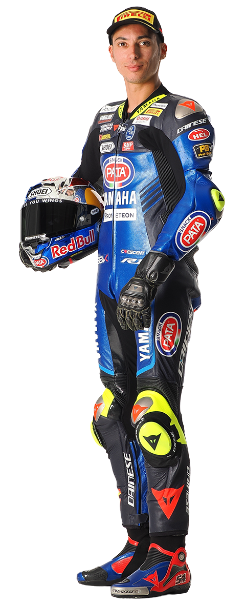
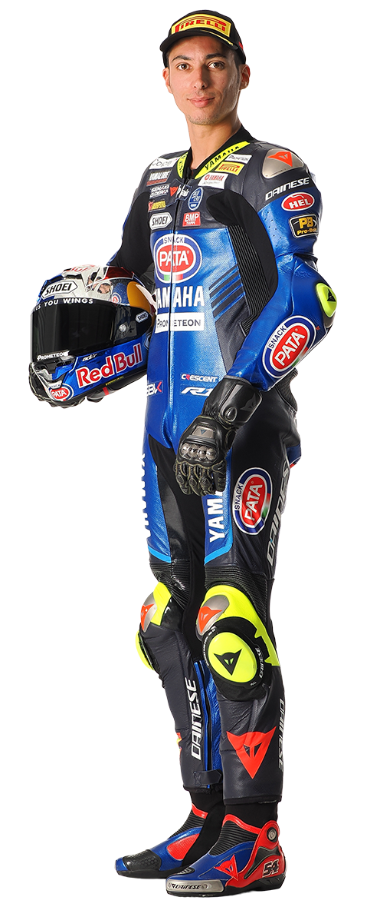

Quien Soy
Toprak Razgatlıoğlu nacido en Alanya, Provincia de Antalya, Turquía, el 16 de octubre de 1996, es un piloto de motos que corre actualmente en el Campeonato Mundial de Superbikes con el equipoYamaha with BRIXX WorldSBK.

Toprak Razgatlıoğlu nacido en Alanya, Provincia de Antalya, Turquía, el 16 de octubre de 1996, es un piloto de motos que corre actualmente en el Campeonato Mundial de Superbikes con el equipoYamaha with BRIXX WorldSBK.
